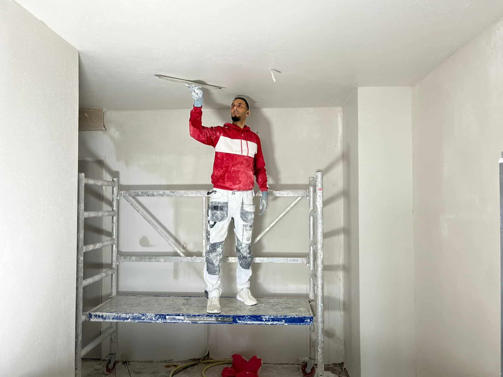
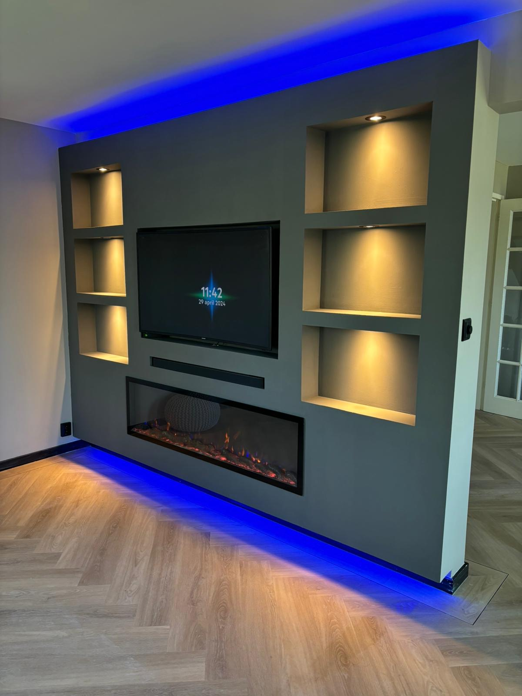
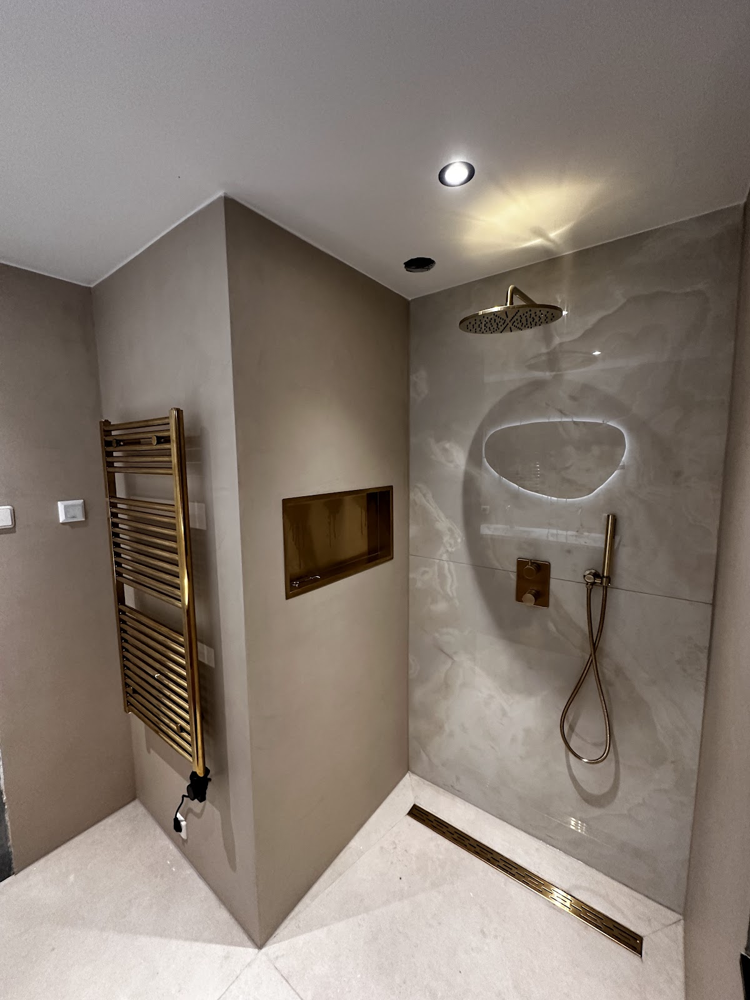
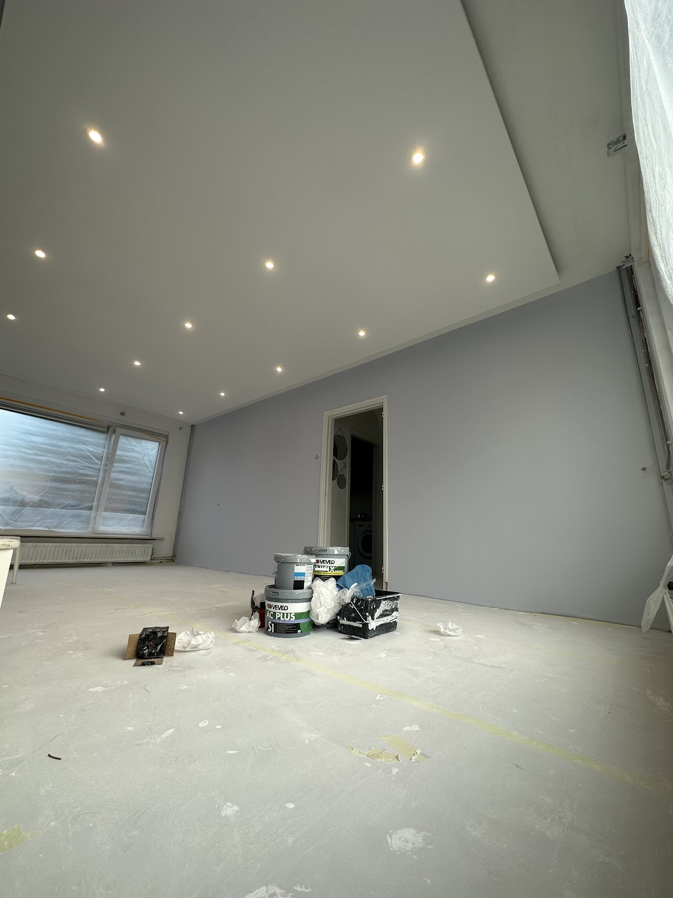
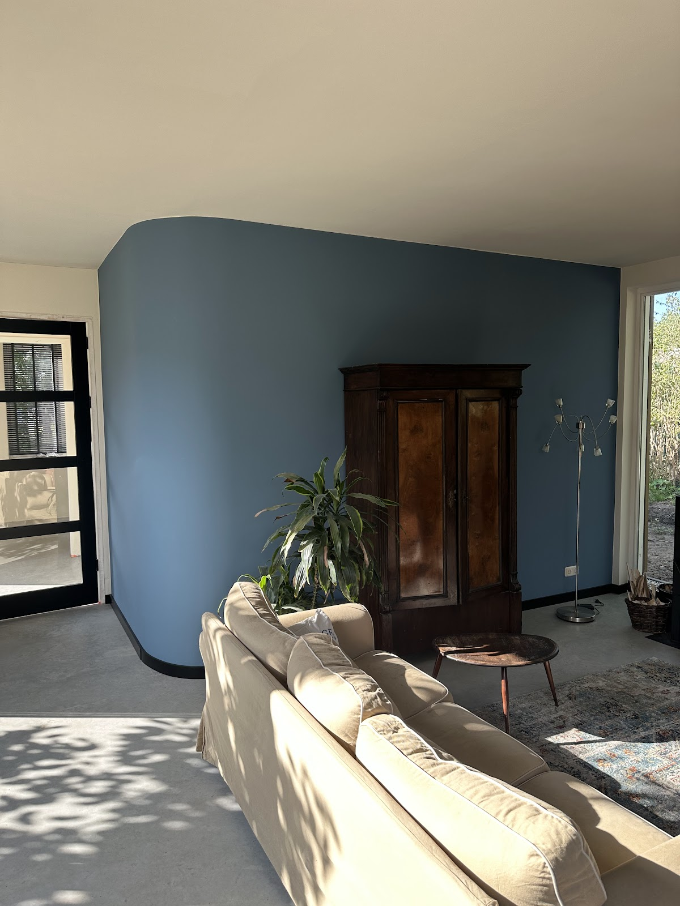
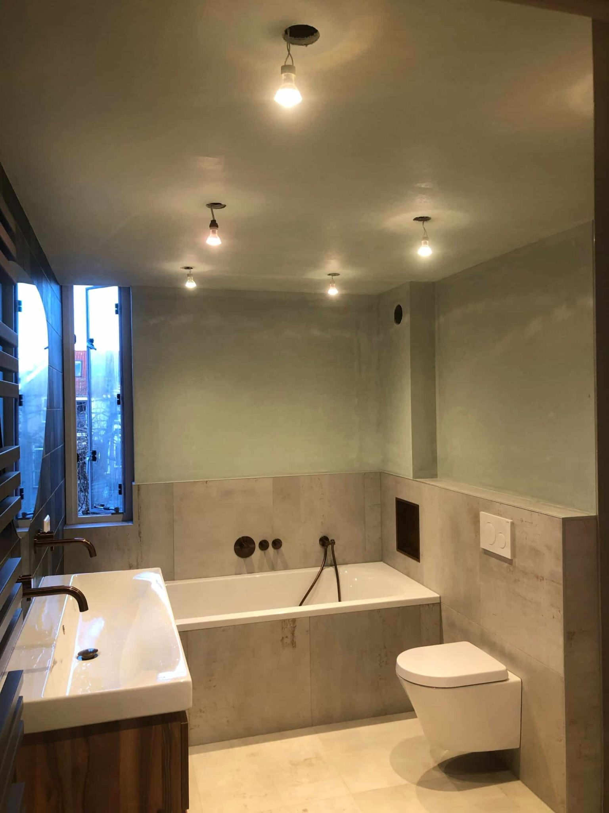
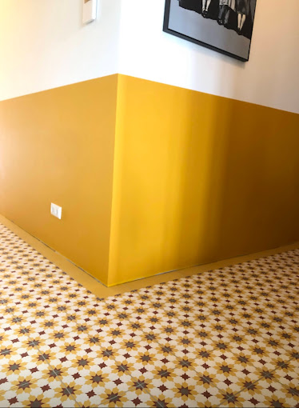
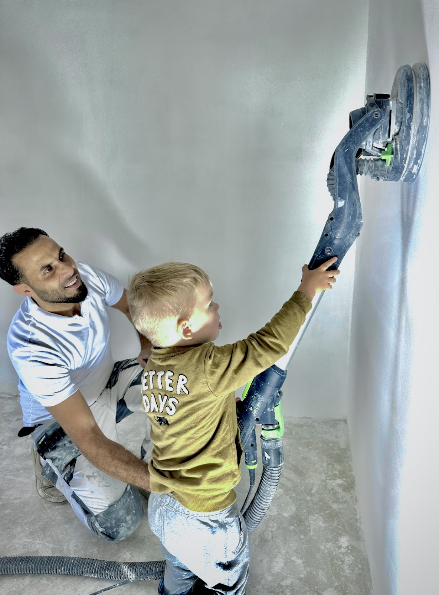

Stucen
Strakke muren en plafonds, sausklaar of behangklaar. Voor renovatie en nieuwbouw, inclusief spuitwerk voor grote oppervlakken en decoratieve afwerkingen.
- Strakke afwerking
- Gestructureerde afwerking
- Beton ciré
- Venetiaans stucwerk
Stukadoor en afbouw in Culemborg
Shadi stuct uw muren en plafonds strak en sausklaar, en verzorgt de afbouw eromheen. Netjes gewerkt, duidelijk afgesproken.
5,0 uit 90 Google-reviews
Een cinewall met nissen en spots, een verlaagd plafond, een badkamer of een kleur op de muur. Shadi maakt het af, zodat u er meteen in kunt wonen.






Strakke muren en plafonds, sausklaar of behangklaar. Voor renovatie en nieuwbouw, inclusief spuitwerk voor grote oppervlakken en decoratieve afwerkingen.
Binnen en buiten. Wanden, plafonds, kozijnen en deuren, met aandacht voor de voorbereiding: beschadigingen herstellen, schuren en reinigen. Ook latex spuiten en advies bij het kiezen van een kleur.
Verlaagde plafonds met ingebouwde spots, scheidingswanden en gipsplaatwerk. Handig om leidingen weg te werken en een ruimte opnieuw in te delen.
Cinewalls en mediawanden voor tv en accessoires, kasten die precies passen en timmerwerk dat aansluit op uw interieur.

Bij SA stukadoor en Afbouw heeft u met Shadi te maken. Hij neemt de tijd om uw wensen te bespreken, adviseert over technieken en materialen en zegt het eerlijk als een muur nog niet goed is.
Een goed resultaat begint bij een goede voorbereiding. Daarom werkt hij zorgvuldig en netjes, en komt hij zijn afspraken na. Ook moeilijke klussen, zoals een zolder met schuine wanden of een trapgat van negen meter.
"Shadi is de beste stucadoor van Nederland, het eindresultaat is altijd fantastisch."
5,0
gemiddeld uit
90 Google-reviews
"Shadi heeft bij ons de zolder gestuked met scheve wanden en een aantal moelijke hoekjes. We zijn heel tevreden over zijn werk. De communicatie was duidelijk en het werk was snel gedaan. Ik kan hem zeker aanbevelen."
"SA stukadoor en Afbouw heeft bij ons de hele woning van stukwerk voorzien en alle wanden gesausd. Wij zijn bijzonder content met het eindresultaat. Shadi is een vakman die meedenkt, goede tips geeft en zeer nauwkeurig werkt. Als je een betrouwbare stukadoor zoekt.... niet verder zoeken !!"
"Een perfectionist! Super strak en glad stucwerk. Shadi heeft de gehele zolder gestuct, waardoor mijn dochter een super nette slaapkamer heeft gekregen. Gezien alle kozijnen en deuren waren vervangen, heeft Shadi er ook voor gezorgd dat rondom alles weer strak eruit zag."
"Meerdere kamers in mijn huis waren in bijzonder slechte staat. (Gaten in de muur, zanderig metselwerk, etc) Shadi was flexibel, heeft over een langer periode, naar mijn wens, de kamers 1 voor 1 volledig aangepakt en het eindresultaat is absoluut top. Als ik weer een klus heb, bel ik Shadi."
"Wij hebben SA stukadoor en Afbouw ingeschakeld voor meerdere werkzaamheden in huis en zijn ontzettend tevreden. Shadi heeft bij ons de cinewall gestuct en afgewerkt, boven de eettafel een prachtig lampeneiland met spotjes gemaakt en ook op zolder alles strak en professioneel afgewerkt. Zelfs de plek waar eerst de vlier…"
"Shadi, heeft ons gehele huis voorzien van een prachtige stuclaag en heeft hierna de muren voorzien van een mooie kleur muurverf. Geen makkelijke klus, trapgat in huis is wel 9 meter! Hij werkt netjes en levert kwaliteit. SA Stukadoor en Afbouw adviseer ik aan. Shadi bedankt voor jou inzet en uitvoering."
"Onwijs fijn dat Shadi ons heeft geholpen met het klaar maken van ons huisje. Een rustige en vriendelijke gast die onwijs fijn meedenkt in oplossingen om een je huis woon klaar te maken. Hij is heel kritisch in wat hij vindt van de huidige staat van een huis. Als een muur niet goed is laat hij weten waarom die niet goed…"
"Wij zijn erg blij met het resultaat van het stucen van de slaapkamerverdieping en het trapgat gestuct door SA Stukdoor en Afbouw. Alles afspraken zijn goed nagekomen en de communicatie verliep prettig. Een echte professional die zijn vak verstaat, en bovendien een hele aardige, rustige persoon, die hard en netjes te we…"
"Shadi heeft bij ons stucwerk en schilderwerk gedaan (plafond gespoten). Hij werkt hard, netjes en communiceert heel prettig. Wij bevelen hem aan!"
Vertel wat er moet gebeuren, dan komt Shadi kijken en krijgt u een vrijblijvende offerte.
06 87 16 83 35| ma t/m vr | 08:00 tot 18:00 |
| zaterdag | 12:00 tot 17:00 |
| zondag | gesloten |